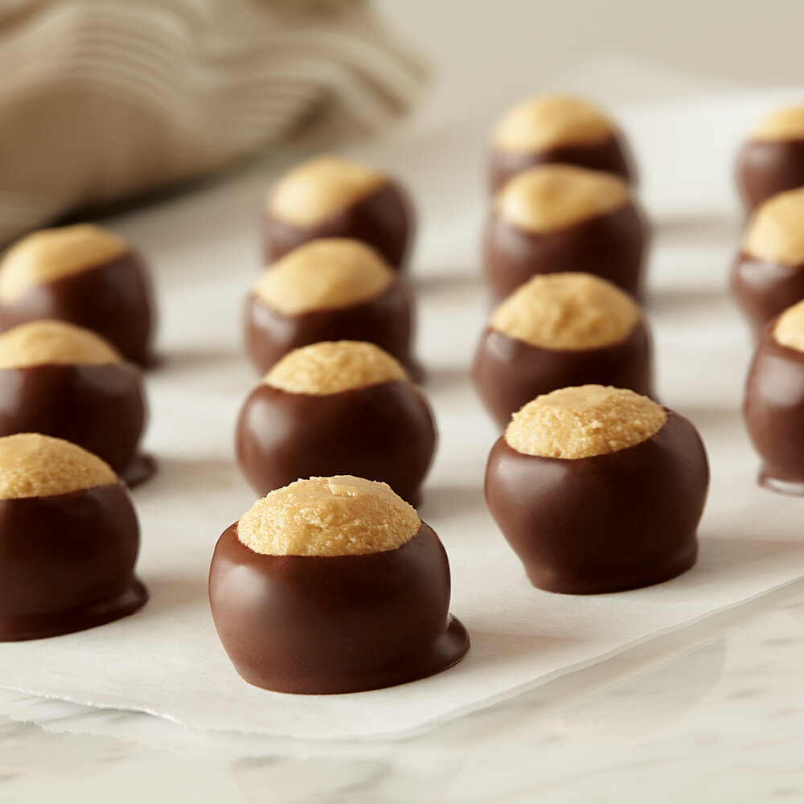

Home
Buckeyes
Prep Time: 15-20 minutes, Cool Time: 15-20 minutes, Total Time: roughly 45 minutes.

Description
Buckeyes are a simple yet spectacular treat to enjoy, so long as you aren't allergic to peanuts and have a good sweet tooth!
They can be a bit frustrating on the first try, but with practice will make a delicious sweet treat well worht the effort.
Ingredients
For a single batch, use these ingredients. For half or double recipes, half or double all quantities.
- 1 stick butter
- 1 1/4 tsp vanilla extract
- 3 1/4 cups powdered sugar
- 2 tablespoons brown sugar
- 12 oz melted chocolate
Steps
- Wash your hands!
- Mix butter and peanut butter together in stand mixer.
- Add 2 tablespoons brown sugar and 1 1/4 tsp vanilla extract.
- Mix and add 3 1/4 cups powdered sugar.
- Wash hands again then roll the mixture into small spheres on a baking tray.
- Leave the tray to cool in refridgerator for 15-20 minutes.
- While buckeyes cool, melt chocolate with microwave or other source.
- Once buckeyes have chilled, wash hands again then use a toothpick to roll the peanut butter mixture in chocolate. Roll each ball in chocolate, covering all but a small circle at the top, then return to refridgerator to cool.
- Mistakes/disasters may happen with melty chocolate and fragile dough, especially if it isn't chilled enough. It still tastes good though!
- Let completed buckeyes chill for at least 5 minutes to preserve form of chocolate. For best results, take them out to thaw 5-10 minutes before consumption.
- Enjoy!